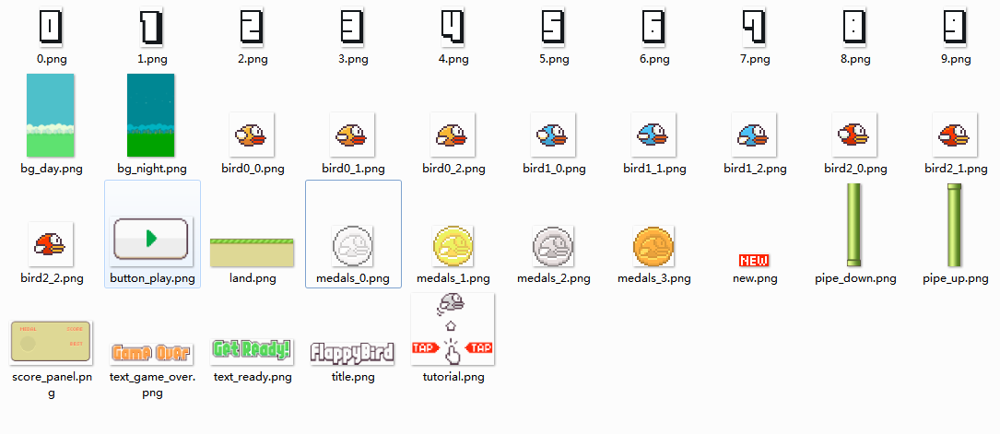
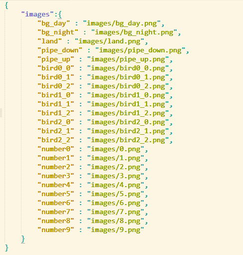
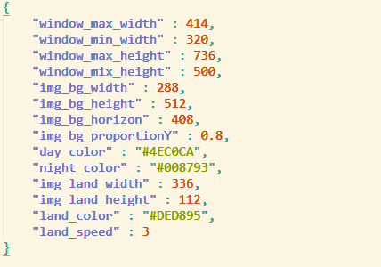
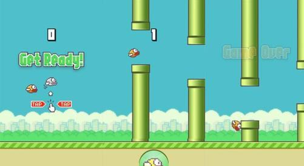

原生JavaScript+Canvas制作FlappyBird小游戏(1)
窗口的自适应，资源加载与参数配置
写在前面： 大作业选了一个有关游戏的题目，之前一直没接触过游戏，本着多学习JavaScript知识的想法，上网搜查了相关的知识，仍然没有太多头绪。偶然在bilibili上看到一个视频教程。看完后决定仿照其源码，重新整理，复习，同时对所学的知识进行一定的扩充。以下是视频网址(讲课老师十分幽默风趣)： [爱前端]Canvas开发FlappyBird小游戏
第一天首先不忙着编程。要做一些前期的准备工作：
- 素材下载：“FlappyBird游戏素材下载”。 也可以自行百度。 
- 配置资源文件 ： 避免在代码中写大量数据。调用资源时访问一个对象就行。需要用一个json或txt文件将资源名与路径保存下来。形式如下:
 - 配置参数文件 : 我在看过视频教程后考虑到由于游戏中时常需要调节一些固定的高度，宽度，速度等。这些变量有时又会反复出现，所以将游戏运行的参数也保存到一个文件中进行读取。调试时就仅仅需要修改某些参数就行。形式如下：

前期准备工作做得差不多之后，会有些许仪式感~~~ 然后，我们回过头来看一下要做的游戏。如下图是一个游戏的大致流程：

从图中直观的可以看到4个对象。 - 背景
- 大地
- 管道
- 小鸟
故而可以抽象成4个类。游戏围绕着着四个类的互相通讯进行。但是考虑到可能有更多的元素没有第一时间可以想到。所以，当类(动画元素)变多了之后，类与类之间的通讯会显得十分繁杂。难以管理。所以采用中介者模式进行管理。中介者就是全局变量。每一个类都通过中介者与其他了类进行通讯。这样就变得容易管理了。
知道了大概流程之后就可以开始着手编程了。首先在body中添加一个标签：<canvas id="game">您的浏览器不支持画布！请升级浏览器！</canvas>
这样写既简单又实用：做到了平稳退化。
然后开始写中介者类，不过，在写之前！还得做一件事，引入一个js库：SimpleInheritance.js,这个库十分小，仅仅几十行代码量，大小在2kb左右，由大神John Resig 编写（JQuery 1.0作者） 主要实现了利用JS创建类与实现继承，具体的目前就不深究了。考虑到设计过程中还会加载资源文件，所以还得封装一个ajax：1
2
3
4
5
6
7
8
9
10
11
12
13
14
15
16
17
18
19
20
21
22
23// 这里利用promise对象简化一下Ajax的异步操作
// 由于游戏只用到Get请求，故而不添加post方法参数的解析方法
// 简单的做一个Ajax封装
(function(){
var Ajax = window.Ajax = function(options) {
var xhr = new XMLHttpRequest();
return new Promise(function (resolve, reject) {
xhr.onreadystatechange = function () {
// 如果直接判断 xhr.readyState === 4 && xhr.status === 200
// 则会出现弹出 0 XMLHttpRequest对象还没有完成初始化
if (xhr.readyState === 4 ) {
if(xhr.status === 200){
resolve(xhr.responseText);
} else {
reject(xhr.status);
}
}
};
xhr.open(options.method,options.url,options.async);
xhr.send(null);
});
}
})();
好的。这么罗里吧嗦，又臭又长的准备之后。可以开始编写中介者类了。但是！还不可以直接写完。因为还需要为所有动画元素创建一个父类Actor,每个它的子类都有行为改变：update(),和渲染：render()方法。同时每个子类还可以通过 this._super()调用父类的构造方法。构造方法是把自己添加到中介者类的一个公共数组中，渲染时只需要遍历数组进行行为改变与渲染即可。以下是Actor类的js:1
2
3
4
5
6
7
8
9
10
11
12
13
14// Actor为所有演员的父类
(function(){
var Actor = window.Actor = Class.extend({
init : function(){
game.actors.push(this);
},
update : function(){
// 有点演员不含有变化，故而不需要update函数
},
render : function(){
throw new Error("必须重写render方法！");
}
});
})();
我们可以看到以上代码中有个game，game就是中介者Game的一个实例。actor则是game实例中的演员数组(动画元素数组)。这时，在把目前编写完成的Game.js代码亮出来，里边有注释，就不多解释了：1
2
3
4
5
6
7
8
9
10
11
12
13
14
15
16
17
18
19
20
21
22
23
24
25
26
27
28
29
30
31
32
33
34
35
36
37
38
39
40
41
42
43
44
45
46
47
48
49
50
51
52
53
54
55
56
57
58
59
60
61
62
63
64
65
66
67
68
69
70
71
72
73
74
75
76
77
78
79
80
81
82
83
84
85
86
87
88
89
90
91
92
93
94
95
96
97
98// 利用中介者模式实现类与类之间的通信
// Game类中包含的都是全局变量
// Game类负责游戏初始化(资源加载，参数设置)，类与类之间的通讯，后期还涉及场景的管理
(function(){
var Game = window.Game = Class.extend({
init : function(canvas_id){
this.canvas = document.querySelector(canvas_id);
this.ctx = this.canvas.getContext('2d');
// 配置文件路径
this.config_url = "config.json";
// 资源文件路径
this.resource_url = "resource.json";
this.config = {};
this.resource_obj = {};
this.resource = {};
// 游戏画布的宽高
this.game_width = document.documentElement.clientWidth;
this.game_height = document.documentElement.clientHeight;
// 演员数组
this.actors = [];
this.load();
},
load : function(){
var self = this;
// 加载参数文件
Ajax({
"method" : 'GET',
"url" : "config.json",
"async" : true
}).then(function(text){
// 设置参数
self.config = JSON.parse(text);
// 首先需要调整屏幕大小自适应
// 根据参数调整宽高
if(self.game_width > self.config.window_max_width ){
self.game_width = self.config.window_max_width;
}else if(self.game_width < self.config.window_min_width){
self.game_width = self.config.window_min_width;
}
if(self.game_height > self.config.window_max_height){
self.game_height = self.config.window_max_height;
}else if(self.game_height < self.config.window_min_height){
self.game_height = self.config.window_min_height;
}
self.canvas.width = self.game_width;
self.canvas.height = self.game_height;
// 提示用户加载资源
self.ctx.textAlign = "center";
self.ctx.font = "30px 微软雅黑";
// 0.382+黄金分割数0.618 = 1
self.ctx.fillText("正在加载游戏资源...",self.game_width/2,self.game_height*0.382);
//加载完配置之后引入资源文件
return Ajax({
"method" : "GET",
"url" : "resource.json",
"async" : true
});
}).then(function(text){
self.resource_obj = JSON.parse(text);
// 载入图片资源
// 图片计时器
var count = 0,
// 图片的数目
image_count = Object.keys(self.resource_obj.images).length;
for(k in self.resource_obj.images){
self.resource[k] = new Image();
self.resource[k].src = self.resource_obj.images[k];
self.resource[k].onload = function(){
count ++ ;
self.ctx.clearRect(0,0,self.game_width,self.game_height);
self.ctx.fillText("正在加载图片"+count+"/"+image_count,self.game_width/2,self.game_height*0.382);
if (count == image_count) {
// 目前图片加载完成即可开始游戏
self.start();
}
}
}
}).catch(function(status){
console.log(status);
})
},
start : function(){
var self = this;
// var background = new Background(),
// land = new Land();
var timer = setInterval(function(){
self.ctx.clearRect(0,0,self.game_width,self.game_height);
for(var i=0,len = self.actors.length;i<len;i++){
self.actors[i].update();
self.actors[i].render();
}
},40);
}
});
})();
在body中引入以上的js文件之后。就可以运行了。它能够自适应屏幕大小。同时，资源文件以及配置文件算是加载完成了。引用资源与引用参数时，访问game.resource 与 game.config 对象，就能得到对应的资源与参数。效果图如下：